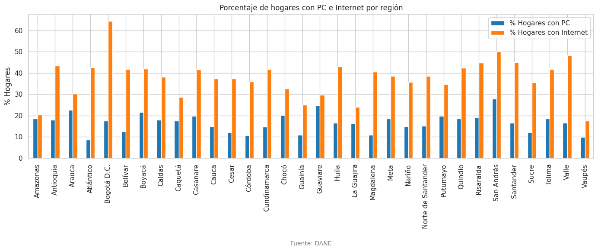
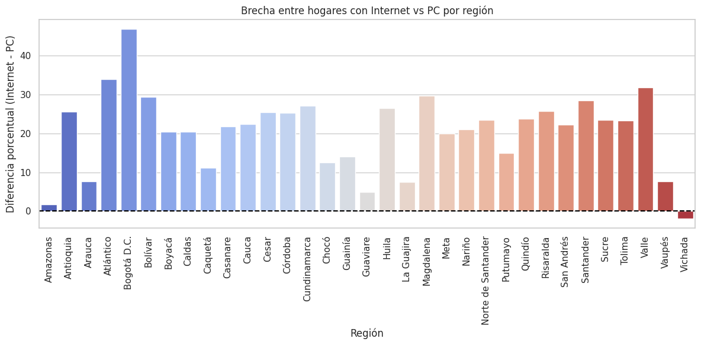
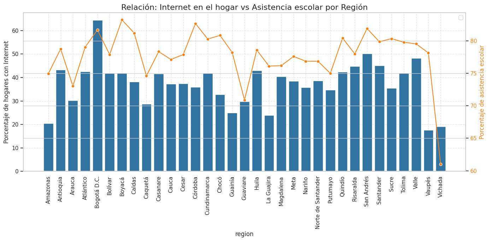
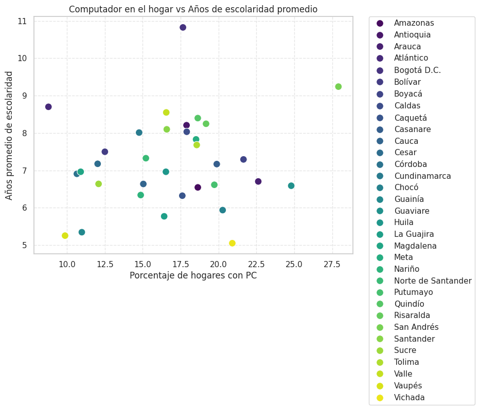
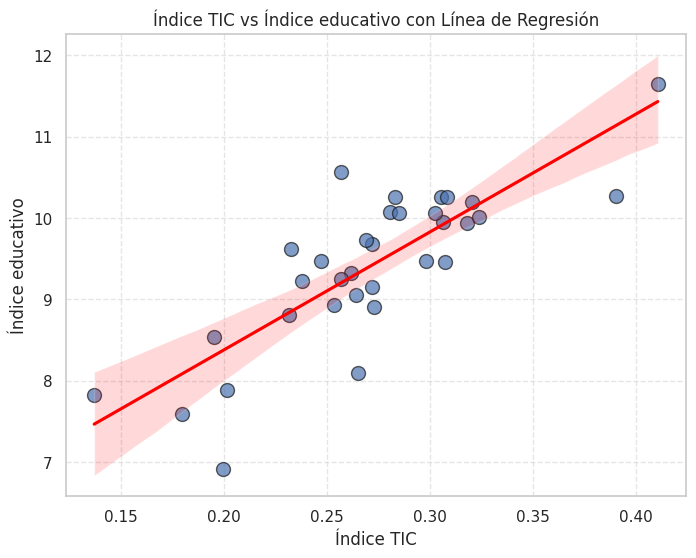
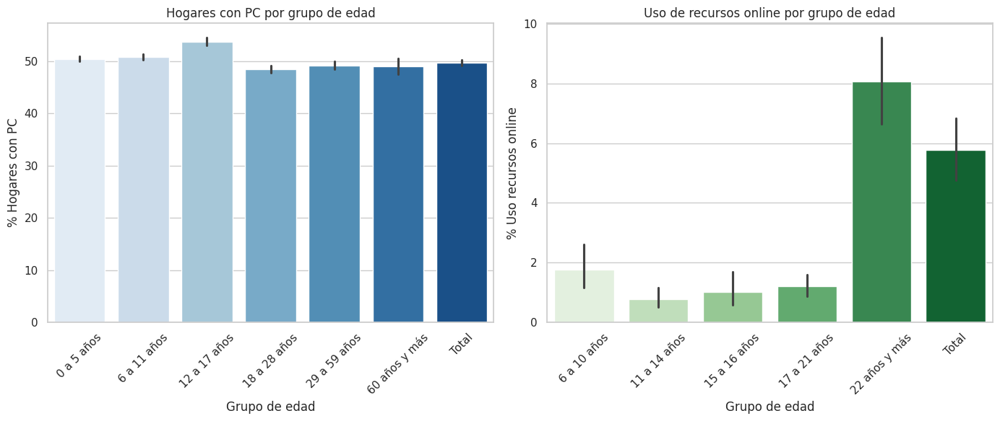

Conectando a Colombia Digital
Analizamos el acceso a dispositivos digitales en todas las regiones de Colombia. Descubre datos actualizados sobre computadores, celulares, tabletas y conectividad.
Calculadora de Acceso Digital
Ingresa los datos de cualquier región colombiana y obtén indicadores precisos basados en datos del DANE
📊 Análisis Regional
📈 Resultados del Análisis
Análisis Estadístico Detallado
Visualizaciones de datos reales sobre acceso digital y educación en Colombia
📊 Análisis Comparativo Regional
Estos gráficos muestran datos reales sobre el acceso a tecnología y su relación con indicadores educativos en las diferentes regiones de Colombia.
🏠 Porcentaje de Hogares con PC e Internet por Región

💡 Insights Clave (según análisis DANE):
- Bogotá D.C. lidera en ambos indicadores con mayor penetración tecnológica
- Existe una brecha significativa entre regiones centrales y periféricas
- El acceso a internet supera consistentemente al de computadores en todas las regiones
- Las regiones rurales muestran los menores porcentajes de acceso
📈 Brecha entre Hogares con Internet vs PC por Región

💡 Insights Clave:
- Mayor acceso a internet que a computadores indica predominio de dispositivos móviles
- La brecha varía significativamente entre regiones (línea de referencia en 0)
- Oportunidad clara para programas gubernamentales de acceso a computadores
- Refleja el cambio hacia conectividad móvil en Colombia
🎓 Relación: Internet en el Hogar vs Asistencia Escolar por Región

💡 Insights Clave (análisis estadístico):
- Correlación positiva entre acceso a internet y asistencia escolar
- Las regiones con mejor conectividad muestran mayores tasas de retención educativa
- La brecha digital impacta directamente en oportunidades educativas
- Necesidad urgente de políticas integradas de conectividad y educación
📚 Computador en el Hogar vs Años de Escolaridad Promedio

💡 Insights Clave:
- Correlación positiva: mayor acceso a computadores se asocia con más años de educación
- La tecnología facilita la continuidad y calidad educativa
- Impacto generacional del acceso temprano a tecnología
- Diferencias regionales evidencian desigualdades estructurales
📊 Índice Digital vs Índice Educativo con Línea de Regresión

💡 Insights Clave (modelo estadístico):
- Correlación estadísticamente significativa entre ambos índices
- Predictibilidad del rendimiento educativo basado en acceso digital
- Base científica sólida para políticas de inversión tecnológica
- R² del modelo indica nivel de explicación de la varianza
👥 Hogares con PC por Grupo de Edad

💡 Insights Clave (análisis demográfico):
- Los hogares con jefes de hogar más jóvenes muestran mayor acceso a PC
- Brecha generacional marcada en la adopción tecnológica
- Necesidad de programas de alfabetización digital para adultos mayores
- Oportunidad de transferencia de conocimiento intergeneracional
- Correlación entre edad y uso de recursos educativos online
🔬 Metodología y Fuentes de Datos
Información sobre la recolección, procesamiento y análisis de los datos presentados.
📋 Fuentes de Datos
- Encuesta Nacional de Calidad de Vida (ECV) - DANE
- Sistema Nacional de Información de Educación Superior (SNIES)
- Ministerio de Tecnologías de la Información y Comunicaciones
- Instituto Colombiano para la Evaluación de la Educación (ICFES)
⚙️ Procesamiento de Datos
- Normalización de datos por región y población
- Análisis de correlación estadística
- Modelos de regresión lineal y no lineal
- Validación cruzada de resultados
🧹 Limpieza y Preparación de Datos
- Eliminación de valores nulos y duplicados en los datasets
- Conversión de tipos de datos para análisis estadístico
- Normalización de variables para evitar sesgos
- Creación de columnas derivadas para métricas específicas
📈 Visualización y Reportes
- Generación de gráficos interactivos con
matplotlibyseaborn - Exportación de gráficos en formatos PNG y SVG
- Automatización de reportes en PDF con
reportlab - Integración de resultados en paneles web para consulta
📝 Consideraciones Metodológicas
- Los datos corresponden al periodo 2020-2024 con actualizaciones anuales
- Se aplicaron factores de expansión poblacional según proyecciones del DANE
- Los índices compuestos utilizan metodología de componentes principales
- Intervalos de confianza del 95% para todas las estimaciones estadísticas
Nuestro Equipo
Profesionales comprometidos con la transformación digital de Colombia
Contacto
¿Tienes preguntas sobre nuestros datos o quieres colaborar con nosotros?
info@accesodigital.gov.co
Ubicación
Medellín, Colombia
Estamos comprometidos con la transformación digital de Colombia a través del análisis de datos y la investigación colaborativa.